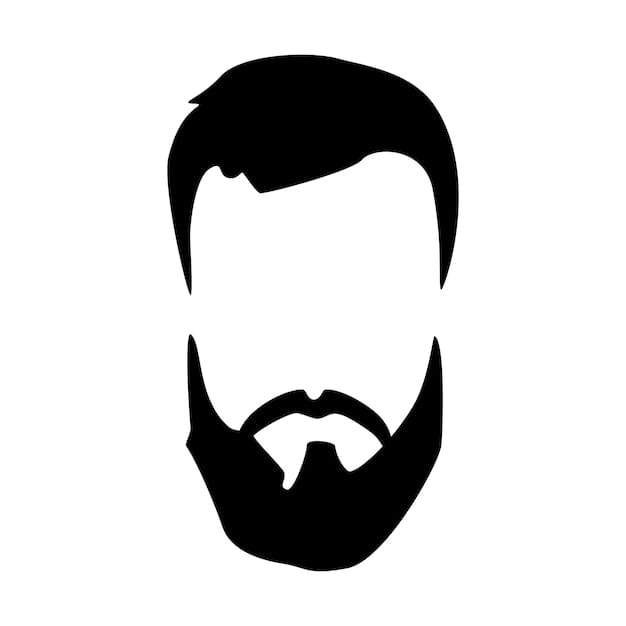

Olá, sou o Pedro Campos. Aos 33 anos redescobri a minha paixão pela informática e pela programação — e este é o meu espaço onde transformo curiosidade, ideias e desafios em código e aprendizem continua.
Atualmente estou a frequentar o curso de Técnico Especialista em Gestão de Redes e Sistemas Informáticos no IEFP Alcoitão, ao mesmo tempo que partilho aqui os trabalhos que desenvolvi no âmbito de UFCDs e outros projetos pessoais.
Neste momento, vai encontrar na minha página alguns trabalhos realizados não só no âmbito do curso CET Téc. Especialista em Gestão de Redes e Sist. Informáticos, que me encontro a frequentar.

Quem sou e o que Faço
Em 2023 desenterrei uma paixão e um projeto antigos, as Redes Informáticas e a Programação.
Transformo curiosidade em código — cada projeto começa com uma pergunta e termina com uma solução.
Aprendiz constante — não espero saber tudo, mas aprendo algo novo todos os dias.
Do hardware ao software, adoro entender como tudo se liga e funciona.
Construo, testo, melhoro, repito — o ciclo que define a minha forma de trabalhar.
Da teoria à prática — aplico o que aprendo no curso de Redes e Sistemas Informáticos em projetos reais.
Motivado pela lógica e pela criatividade — tecnologia é tanto raciocínio quanto expressão.
Pronto para colaborar e crescer — a melhor parte da informática é o que construímos juntos.
Formação
- Licenciatura em Engenharia Informática (não concluido) - Faculdade de Ciências da Universidade de Lisboa
- Programação em Python (2024) - IEFP AMADORA
- CET Téc. Especialista em Gestão de Redes e Sist. Informáticos (2024-Presente) - IEFP Alcoitão